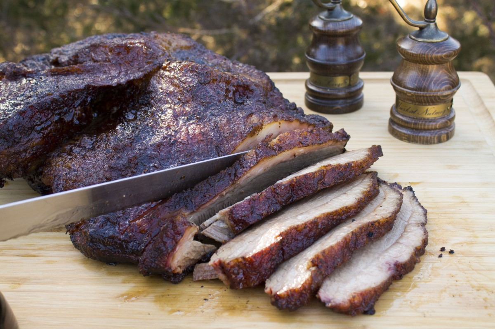

Brisket

Brisket is a Texas food staple that takes a few tries to get right. Follow the steps below and you'll save yourself the wasted meat.
Instructions
- Beef Brisket (8-12 lbs is ideal)
- Season with olive oil, salt, and pepper
- Smoke at 225F for 10 hours
- Wrap brisket in foil and crank heat to 275F for 1.5 hours
- Remove brisket when internal temperature is 197-202F and let is rest for 30min
Ingredients
- Brisket trimmed 8-12lbs fresh
- Olive oil, salt, and pepper